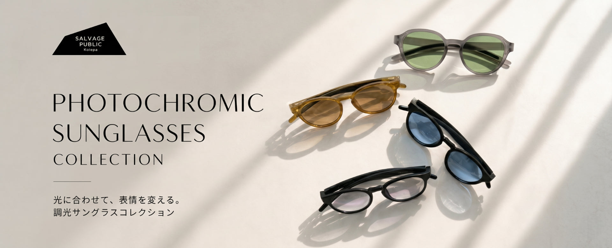
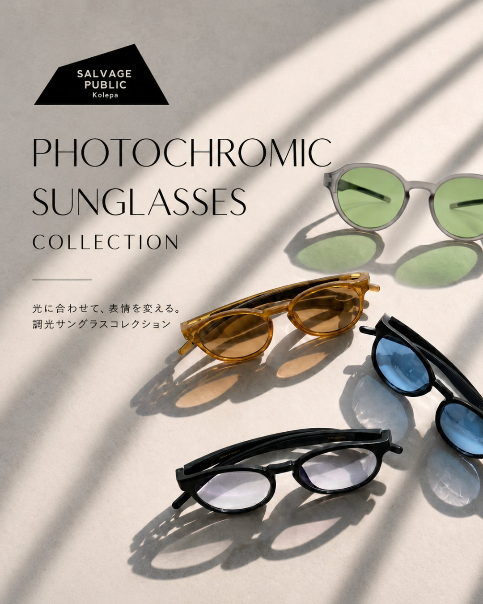
室内ではクリアに、屋外ではサングラスに。
紫外線や光の強さによってカラー濃度が
自動変化する調光レンズを採用。
2モデル8カラーで展開。
モデル名の『POLOLEI』は「真っすぐ」や
「正しい」という意味を持つ。
由来はテンプルが真っすぐなデザインであること、
ゴルフでも「真っ主に狙ったところに」という
意味を込めネーミングされている。
テンプル内側にはラバーが入り
プレー中にもズレにくいのが特徴。
02
Matte Grey with
Polarised Photochromic Green lense
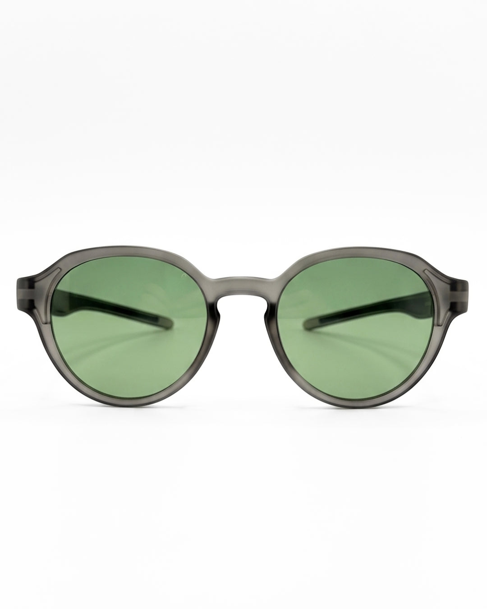
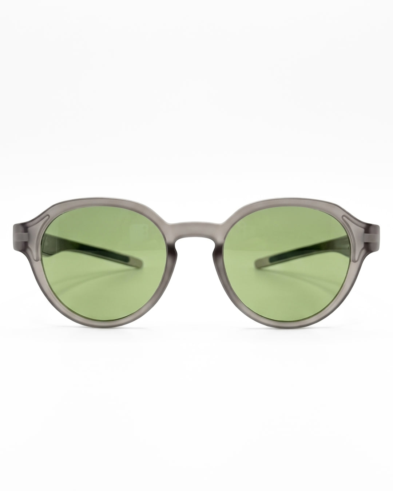
SVKE002
¥16,500 tax in
03
Indigo /
Polarised Photochromic Grey lenses
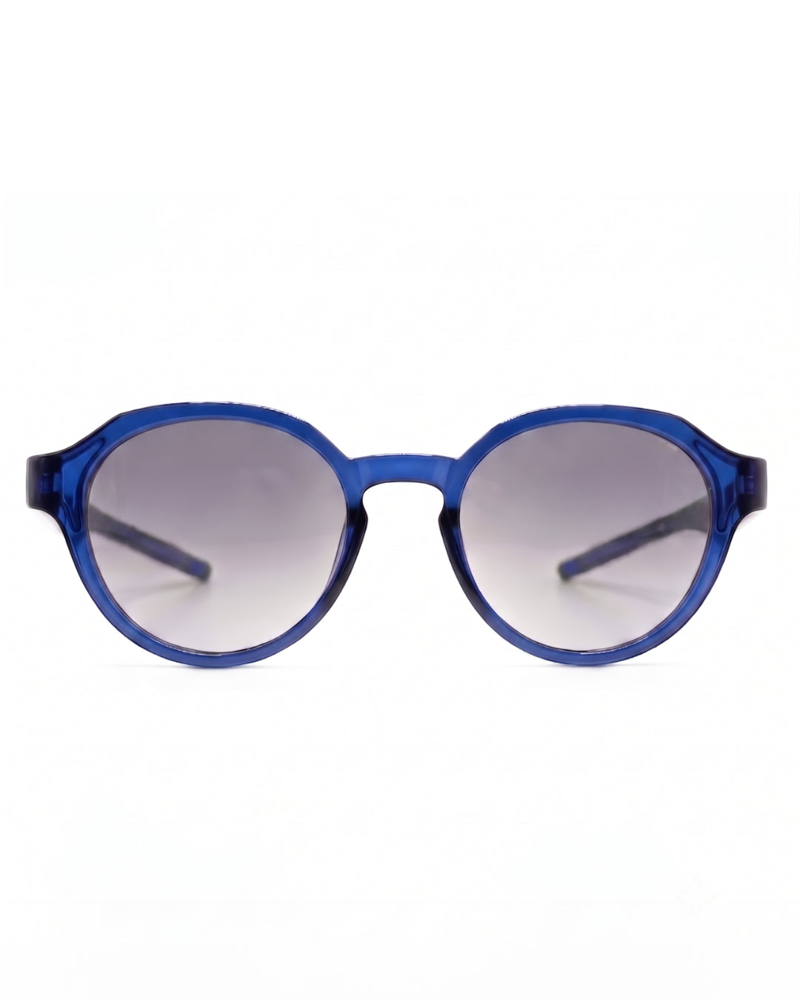
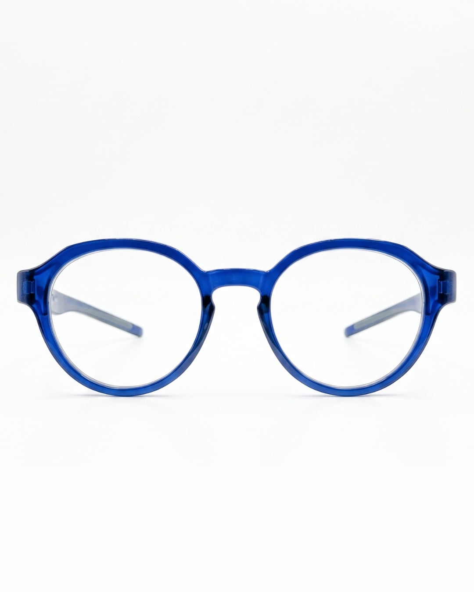
SVKE002
¥15,400 tax in
04
Black with
Polarised Photochromic Grey lenses
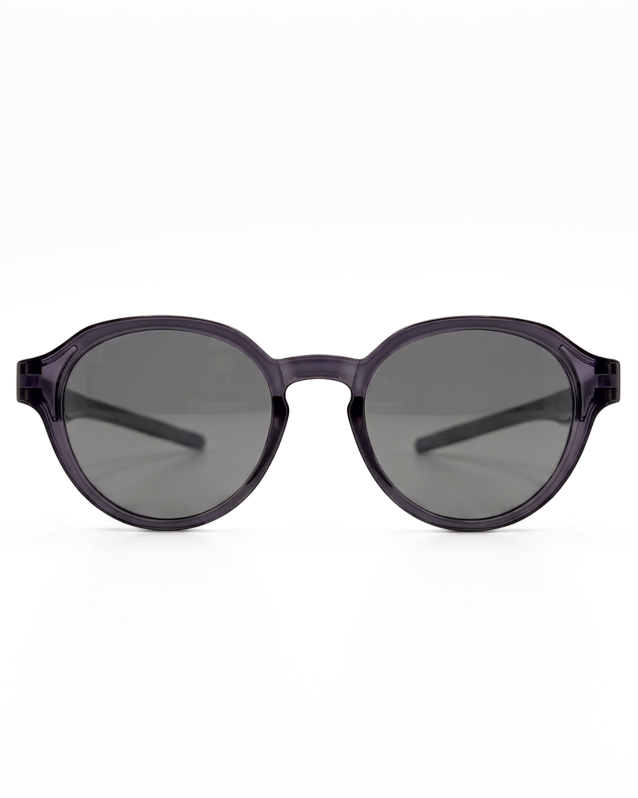
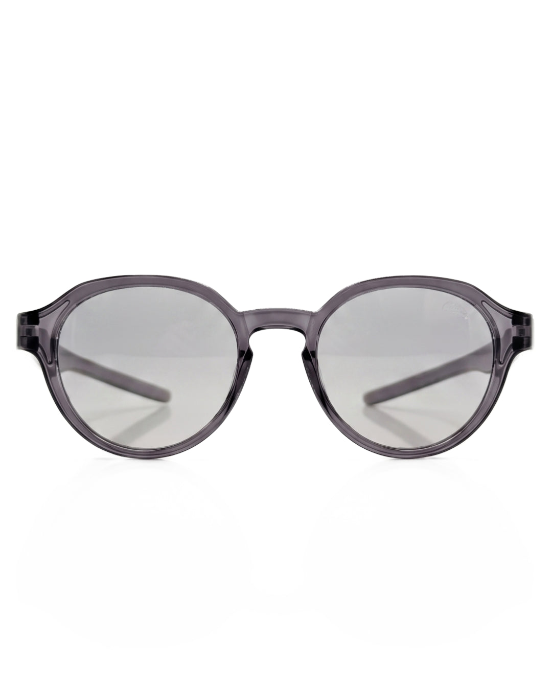
SVKE002
¥16,500 tax in
定番的なウェリントン型のモデル『MAKALOA』。
ハワイ語で2つの意味を冠したモデル名で
Maka(目)Loa(長い)という。
長い目とは"先を見つめる事の出来る目"
"遠くまで見渡せる目"という意味が込められ
ネーミングされている。
02
Matte Black with
Polarised Photochromic Blue lense
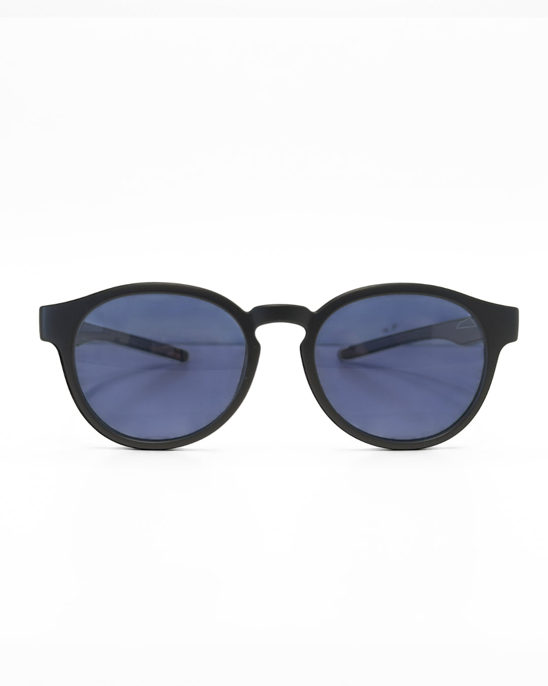
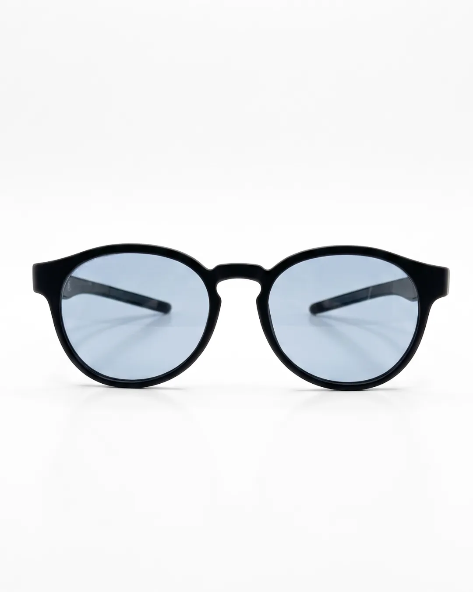
SVKE003
¥16,500 tax in
03
Black with
Photochromic Grey lenses
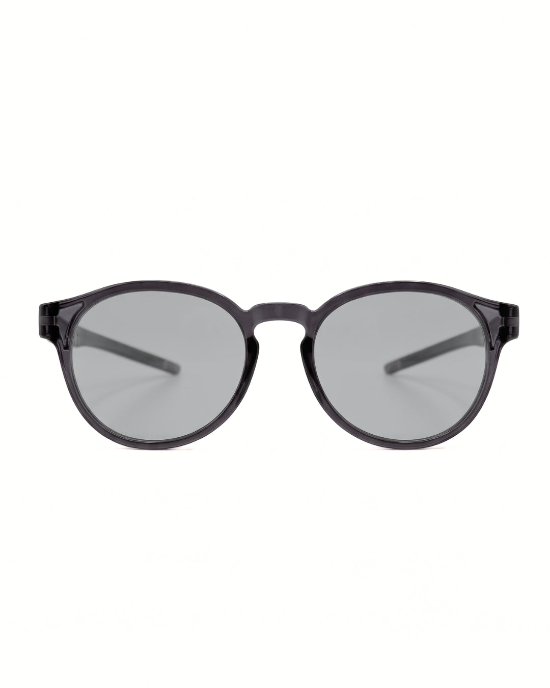
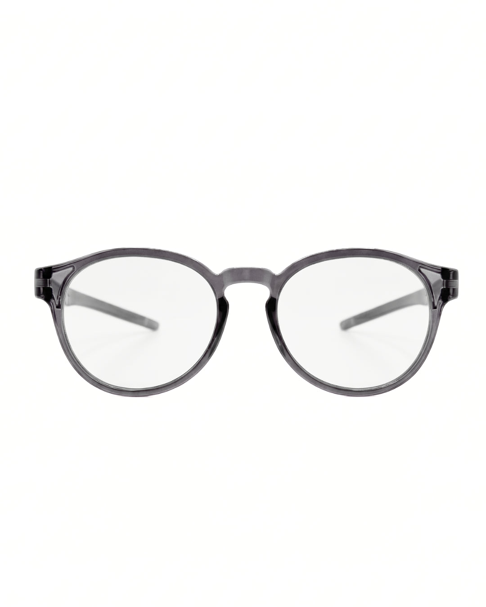
SVKE003
¥15,400 tax in